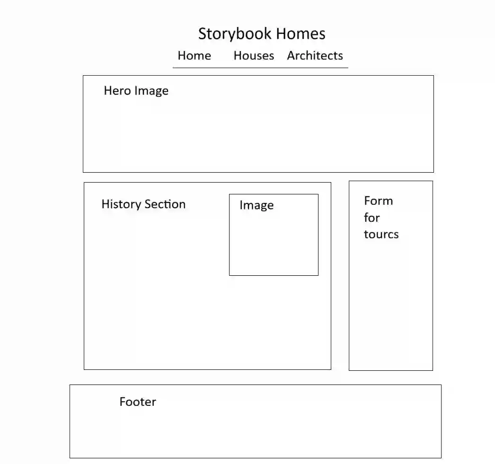
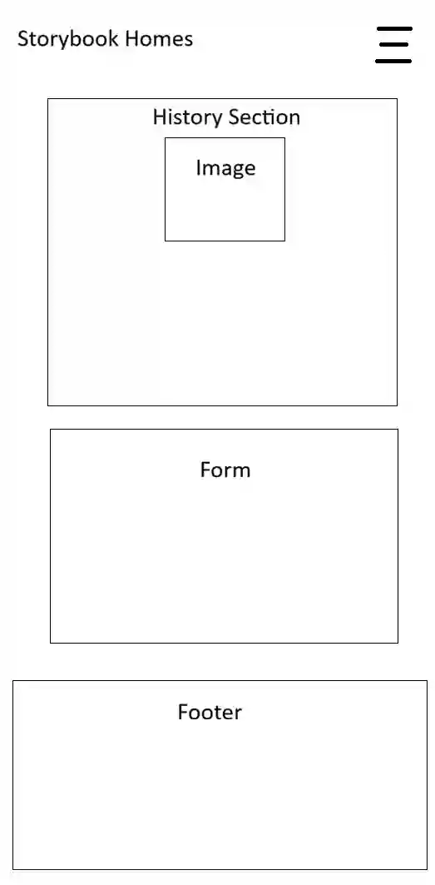

Site Purpose
This site will be a fun history of Storybook Style architecture that started in California but spread throughout the United States.
Scenarios
- When did Storybook Style architecture get started and how long did it last?
- Who were the architects responsible for it's development?
- What are some examples of Storybook Architecture?
Color Scheme
#FFFBF1
#FFF2D0
#ebd671
#FFB2B2
#A34444
#58315F
#AC7D88
#FAF3E0
Fonts
- Calistoga
- Work Sans
Wireframes

